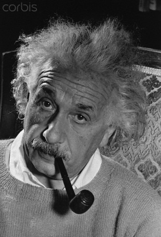
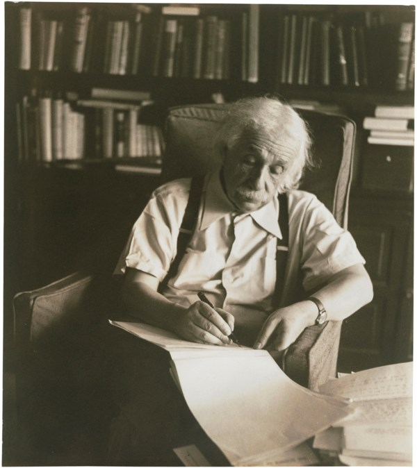

Images




Albert Einstein (/ˈaɪnstaɪn/ EYEN-styne; German: [ˈalbɛʁt ˈʔaɪnʃtaɪn] (listen); 14 March 1879 – 18 April 1955) was a German-born theoretical physicist, widely acknowledged to be one of the greatest and most influential physicists of all time. Einstein is best known for developing the theory of relativity, but he also made important contributions to the development of the theory of quantum mechanics. Relativity and quantum mechanics are together the two pillars of modern physics. His mass–energy equivalence formula E = mc2, which arises from relativity theory, has been dubbed "the world's most famous equation". His work is also known for its influence on the philosophy of science. He received the 1921 Nobel Prize in Physics "for his services to theoretical physics, and especially for his discovery of the law of the photoelectric effect", a pivotal step in the development of quantum theory. His intellectual achievements and originality resulted in "Einstein" becoming synonymous with "genius".
Gravitational waves In 1916, Einstein predicted gravitational waves, ripples in the curvature of spacetime which propagate as waves, traveling outward from the source, transporting energy as gravitational radiation. The existence of gravitational waves is possible under general relativity due to its Lorentz invariance which brings the concept of a finite speed of propagation of the physical interactions of gravity with it. By contrast, gravitational waves cannot exist in the Newtonian theory of gravitation, which postulates that the physical interactions of gravity propagate at infinite speed.
The first, indirect, detection of gravitational waves came in the 1970s through observation of a pair of closely orbiting neutron stars, PSR B1913+16.[270] The explanation for the decay in their orbital period was that they were emitting gravitational waves. Einstein's prediction was confirmed on 11 February 2016, when researchers at LIGO published the first observation of gravitational waves, detected on Earth on 14 September 2015, nearly one hundred years after the prediction. Hole argument and Entwurf theory While developing general relativity, Einstein became confused about the gauge invariance in the theory. He formulated an argument that led him to conclude that a general relativistic field theory is impossible. He gave up looking for fully generally covariant tensor equations and searched for equations that would be invariant under general linear transformations only. In June 1913, the Entwurf ('draft') theory was the result of these investigations. As its name suggests, it was a sketch of a theory, less elegant and more difficult than general relativity, with the equations of motion supplemented by additional gauge fixing conditions. After more than two years of intensive work, Einstein realized that the hole argument was mistaken[278] and abandoned the theory in November 1915.Energy momentum pseudotensor Main article: Stress–energy–momentum pseudotensor General relativity includes a dynamical spacetime, so it is difficult to see how to identify the conserved energy and momentum. Noether's theorem allows these quantities to be determined from a Lagrangian with translation invariance, but general covariance makes translation invariance into something of a gauge symmetry. The energy and momentum derived within general relativity by Noether's prescriptions do not make a real tensor for this reason.[295] Einstein argued that this is true for a fundamental reason: the gravitational field could be made to vanish by a choice of coordinates. He maintained that the non-covariant energy momentum pseudotensor was, in fact, the best description of the energy momentum distribution in a gravitational field. While the use of non-covariant objects like pseudotensors was criticized by Erwin Schrödinger and others, Einstein's approach has been echoed by physicists including Lev Landau and Evgeny Lifshitz